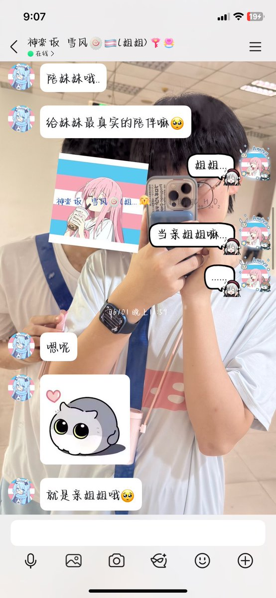
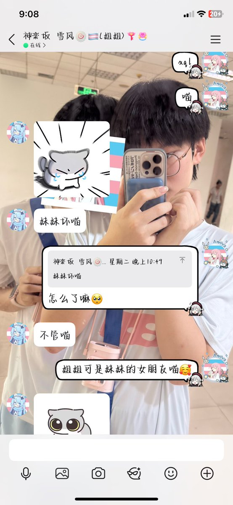
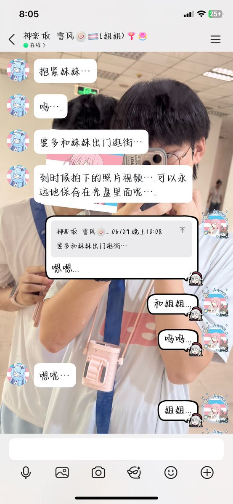

xiecar
@xiecar52
@QimoHK300311 @Kagura_Yukikaze 🕯



HK_本人qimo丶🍥🏳️⚧️
@QimoHK300311
毋庸置疑...我的状态肯定是极差的...未来会更差...
雪风...答应了要做亲姐妹...对方的恋人...要我在佛山好好的等她从安徽回来...没想到是永别...
似乎...7.14那晚...我是最后一个在佛山见到她的人...也是我与她的最后一面...
姐姐...妹妹真的一直爱着你的...
为什么要抛下妹妹...
姐姐...妹妹想去找你. https://t.co/fyxMbpGsHL